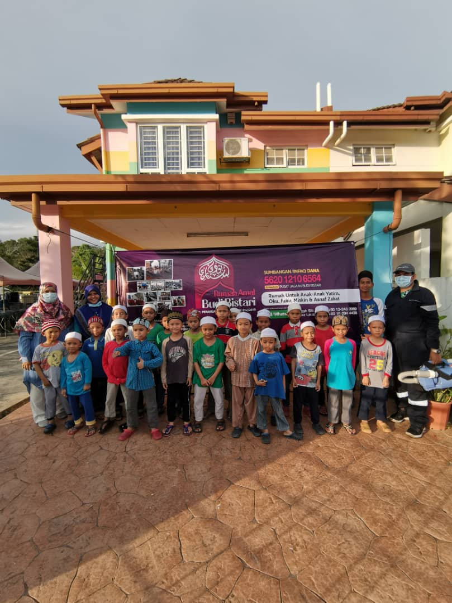

About Rumah Amal Budi Bistari
By asking profusely for the grace and mercy of Allah and the blessings of the Prophet Muhammad SAW. This bistari charity house is a child care center that controls virtue, care and education for orphans, the poor and the group of children asnaf zakat and children who need protection here. This charity house puts as many as 30 male residents from the age of 7 to 9 years. In addition to providing basic needs in the form of virtue here, the Budi Bistari Charity House also taking things seriously learning and moral education as human development that is useful for the religion of the nation and state and to become the best of humans who benefit other humans.
Rumal Amal Budi Bistari is controlled by BUDI BISTARI GUARANTEE CENTER (Registration No.: 001957968-M). Rumah Amal Budi Bistari since its foundation began by renting a house unit at Bandar Country Homes, 48000 Rawang, Selangor. After several years of operating there, with the aim of increasing the service, Rumah Amal Budi Bistari has moved to address No. 1, Jalan Kota Puteri 5/18B, Kota Puteri, 48000 Rawang, Selangor with only 25 students.
Now Rumah Amal Budi Bistari operates in a new location at the address NO. 2, JALAN SETIA PERDANA U13/27B, ALAM NUSANTARA, SETIA ALAM, SECTION 13, SHAH ALAM, SELANGOR DARUL EHSAN.
On the basis of the love demanded by Allah SWT, these children are brought up so that they know, believe in Allah and accept God's provisions according to his will. Love is needed by all human beings. Therefore, in this house, these children try to be nourished Spiritually, Mentally and Physically with the right love according to the will of God.